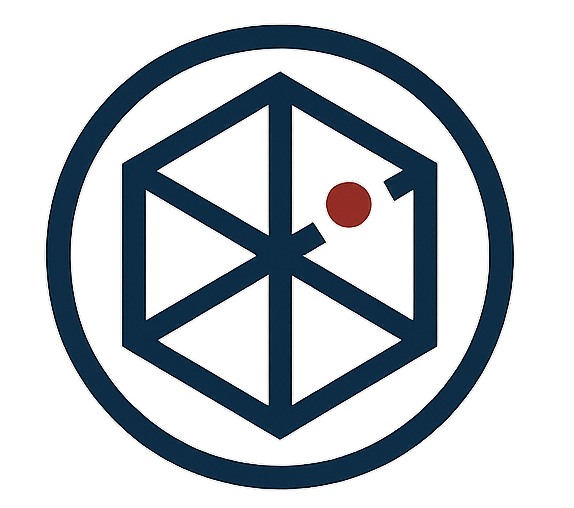

CLASSIFIED
REG-001
2026.04.12

世界境界線の観測記録
初期フェーズにおける空間ノイズの増幅と、それに伴うレイヤー構造崩壊について。実体化の危機と対策の記録。
A.R.C.A. Archival Records & Chronicles Archive
Document ID: AH-ARC-MAIN / Version 2.3.0 / Document Hub

初期フェーズにおける空間ノイズの増幅と、それに伴うレイヤー構造崩壊について。実体化の危機と対策の記録。
接続元の識別プロセス、および記憶消去を回避するための精神障壁パラメータ設定マニュアル。運用者向け実装ガイド。
当機構の観測圏外へと逸脱した、特定の概念実体（404コード含む）の追跡ログ断片。接触不可、観測のみ。
白い服を纏った少女。世界の終わりを記す存在。その素性は謎に包まれている。
見積書・請求書・納品書・領収書を作成する単一ファイルのツール。入力データは端末内で完結し、外部へ送信されない。
わなの見回りと実包の受払を記録し、印刷できる単一ファイルのツール。電波の届かない場所でも動作する。
忘年会・二次会・結婚式の景品抽選をブラウザで行うツール。スロット・レース・イルミネーション・ロケットの4演出から選べる。
Committee on World Ethics。認可・審査・査察。機構の上位監督機関。
全次元史実保護機構（邦訳は対外使用しない）。記録の保管・索引・真贋鑑定・散逸記録の回収。
深淵技術工業（副題 Deep Void Research）。採取・精製・製品化。武装部門を持たない（方針）。
Boundary Observation Foundation。境界の常時観測・警報発令・観測員の資格認定。
Speculative Hypothesis Research Organization, Strategic Lab。仮説構築・実証実験・解剖再現・作戦立案。
Anomalous Contingency & Assault Solutions。探査・駆除・護衛・封鎖・事故収拾・実地教育。